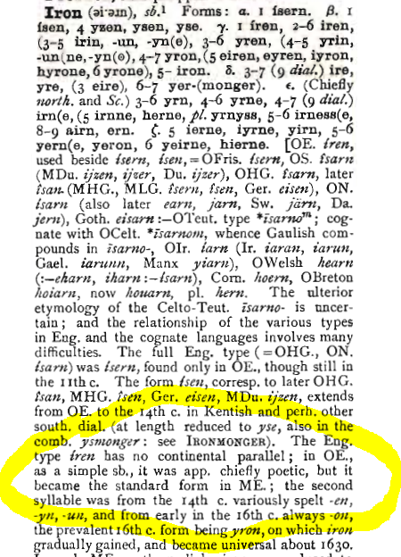
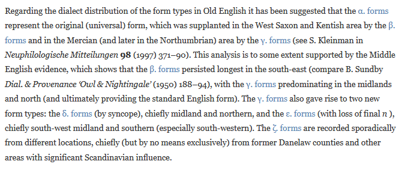
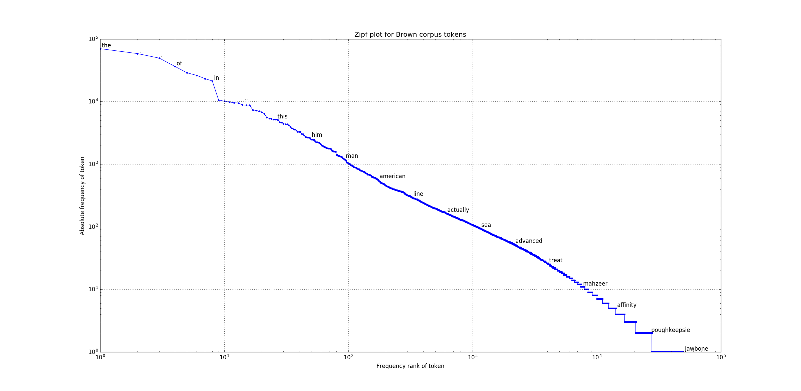
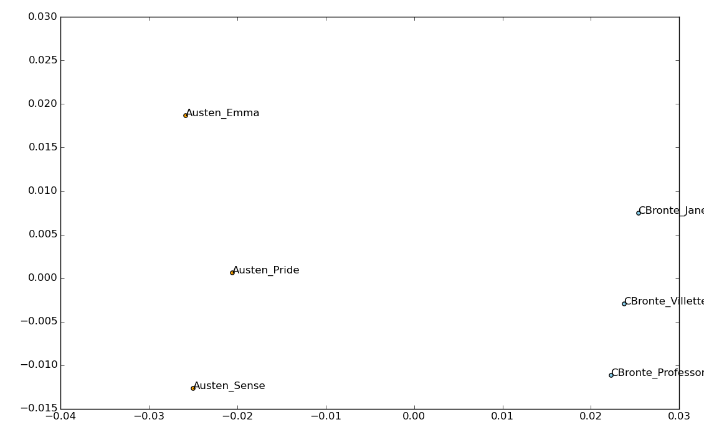
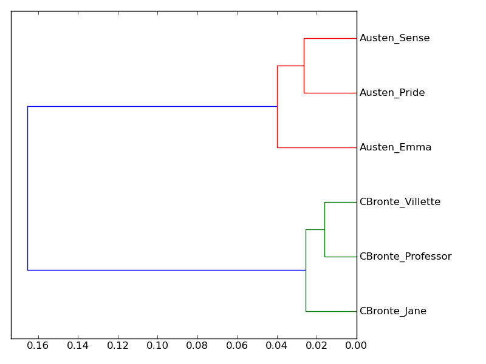
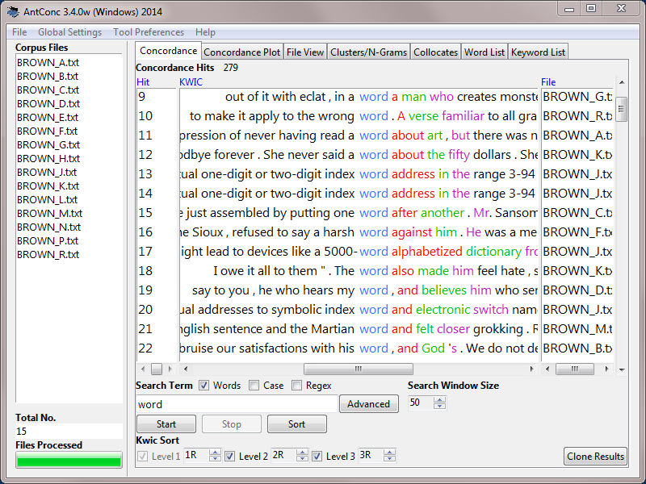
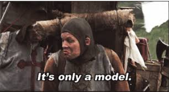

Linguistics in the Digital Humanities
Linguistics in Practice Institute at California State University, Northridge, May 6, 2017
Scott Kleinman, California State University, Northridge / scott.kleinman@csun.edu
What is (are) (the) Digital Humanities?
http://whatisdigitalhumanities.com/
Some Overlapping Fields in DH
- Digital History: Visualizing Emancipation
- Digital Editing: Frankenstein Draft Notebook A from the Shelley-Godwin Archive
- Library and Information Science: Humanities Commons CORE
- Text Mining and Literary Text Analysis
What is Text Analysis
My current definition:
(Computationally) finding quantitative patterns in natural language samples and attributing meaning to these patterns.
Computational techniques for manipulating and explore natural language are often referred to as Natural Language Processing (NLP).
A Section of the Toronto Corpus Created
for the Dictionary of Old English
<s>Him &t;a Azarias inge&t;oncum hleo&t;rede halig &t;urh hatne lig dreag d&ae;dum georn dryhten herede wis in weorcum ond &t;as word acw&ae;&d;: Meotud allwihta &t;u eart meahtum swi&d; ni&t;as to nerganne.</s>
<s>Is &t;in noma m&ae;re wlitig ond wuldorf&ae;st ofer wer&t;eode.</s>
<s>Sindon &t;ine domas on d&ae;da gehwam so&d;e geswi&d;de ond gesigef&ae;ste eac <corr>&t;ine</corr> willan in woruldspedum ryhte mid r&ae;de.</s>
<s>Rodera waldend geoca us georne g&ae;sta scyppend ond &t;urh hyldo help halig dryhten nu we &t;ec for &t;earfum ond for &t;reanydum ond fore ea&d;medum arena bidda&t; lege bilegde.</s>
The Oxford English Dictionary before 2000
From the Oxford English Dictionary Today
Zipf's Law
(illustrated using the Brown Corpus of American English)
Types of Text Analysis
- Structured v. Unstructured Data: Data accompanied by tagging or metadata is structured.
- Supervised v. "Unsupervised" Algorithms: It is almost impossible to implement an experiment without some human decision-making.
Topic Model of PMLA
http://agoldst.github.io/dfr-browser/demo/Examples of Visualising Texts
and Feature Selection
Google N-Gram Viewer Shows the Frequency of Words and Phrases in the Google Books Corpus
Occurrences of the phrases phrases "government", "constitution", "federal government" visualised in the Google N-Gram Viewer: https://books.google.com/ngrams/.Statistical Insight from Term Vector Distances
Cosine Distance and Multidimensional Scaling
Cluster Analysis
Voyant Provides Visual Tools for Text Exploration
The 1840 Democratic Political Party Platform visualised in Voyanthttp://voyant-tools.org/
AntConc
Text Analysis Workflow 1
- Collection
- Pre-Processing
- Statistical Processing
- Visualisation
- Narrative of Meaning
Collection
Where is the data? What form is it in? Is there a pre-existing corpus?
Pre-Processing
- Clean up OCR
- Remove metadata, punctuation, digits, stop words
- Transform tokens (consolidation, lemmatisation)
- Slicing and dicing
- Assigning labels
Pre-processing creates a “deformance” version of the original text for analysis.
Statistical Processing
- Token counting (e.g. characters, words, n-grams)
- Normalisation (e.g. to compare texts of unequal size)
- Frequency/Probability Comparison (e.g. between the number of times a word occurs in two texts)
- Clustering (identifying groups of tokens/texts with common statistical properties)
- Shape quantitative information about the texts for visualisation/interpretation.
Statistical processing transforms the text from natural language to quantitative data. This type of “deformance” typically involves dimensionality reduction, a simplification of the data so that it can be represented in two-dimensional space.
Visualisation
- Arranging quantitative data in graphical format to make it (hopefully) more interpretable than formats in which the data is stored.
- Visualisation is “the reification of misinformation” (Johanna Drucker), so it requires a clear account of the procedures used to make the graph and critical literacy about how to interpret visualisations on the par of the reader.
Narrative of Meaning
- An account of the significance of the results of text analysis.
- Must include an account of the decisions made as part of pre-processing, statistical processing, and visualisation.
Text Analysis Workflow 2
- Re-consider some of the decisions you have made.
- Repeat Text Analysis Workflow 1.
Goals of Lexos
- Easy-to-use.
- Provide a complete workflow.
- Cater to small and medium-sized corpora.
- Cater to non-standard languages and languages with non-Latin writing systems.
- Embed the critical process into the user interface.
Lexos online: http://lexos.wheatoncollege.edu
Exploration with Python and NLTK
A few experiments taken from https://github.com/DistrictDataLabs/intro-to-nltk/blob/master/NLTK.ipynb.
Digital Humanities Is a Discussion
about Digital Methods of
Analysis and Communication
Methods can be applied to born-digital materials as well as remediated materials. Example: Ben Schmidt, Gendered Language on ratemyfrofessor.com.*
 |
|
 |
 |
|  | |
THE END
Made with Reveal.js